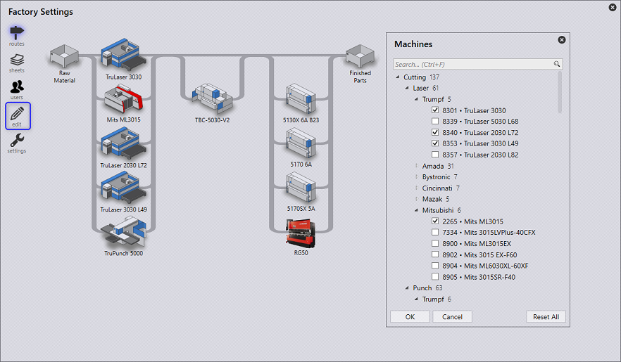

Ajouter/Supprimer une machine
Utilisez la commande éditer pour lancer la boîte de dialogue de sélection de machine. Elle affiche une liste hiérarchique de toutes les machines de découpe et de pliage ainsi que les sélections actuelles.

-
Dans l’arborescence hiérarchique, le nom de machine simplifié est affiché comme étiquette de machine et le nom complet est affiché dans l’info-bulle. L’info-bulle du dossier affiche le chemin (Ex : Trumpf • C Series • C60)
-
Une icône spécifique à la marque est affichée pour les presses plieuses non-Trumpf. L’info-bulle de la machine affiche également la marque de la machine (Ex - Brand: Bystronic).
-
La zone de recherche peut être utilisée pour rechercher des machines par nom, nom complet, marque, etc. La sélection de machine est conservée pendant la recherche afin que vous puissiez sélectionner et rechercher en même temps.
-
La recherche peut également être utilisée pour rechercher par technologie de machine, taille. Ainsi, taper 'fold' dans la zone de recherche affiche toutes les machines de pliage (plieuses de panneaux). De même, taper 10ft affiche toutes les presses plieuses avec une longueur de table de 10ft (ceci est sensible aux unités. Utilisez m pour mètre en unité métrique). Lorsqu’il est disponible dans le nom, le nombre d’axes peut également être utilisé pour la recherche (Ex : 2A, 5A etc.)
-
La commande Réinitialiser tous réinitialise la sélection de machine à la configuration de démonstration.